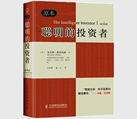

聪明的投资者

| 作者: [美] 本杰明·格雷厄姆 著 | 开本: 16开 |
| 出版社: 人民邮电出版社 | 纸张: 胶版纸 |
| 出版时间: 2011-07 | 页数: 401页 |
| 版次: 1 | 字数: 252千字 |
| ISBN: 9787115253699 | 定价: 58.00 |
| 分类: 经济 | 装帧: 精装 |
内容简介:
《聪明的投资者（原本第4版）》首先明确了“投资”与“投机”的区别，指出聪明的投资者当如何确定预期收益。本书着重介绍防御型投资者与积极型投资者的投资组合策略，论述了投资者如何应对市场波动。本书还对基金投资、投资者与投资顾问的关系、普通投资者证券分析的一般方法、防御型投资者与积极型投资者的证券选择、可转换证券及认股权证等问题进行了详细阐述。在本书后面，作者列举分析了几组案例，论述了股息政策，最后着重分析了作为投资中心思想的“安全性”问题。 《聪明的投资者（原本第4版）》主要面向个人投资者，旨在对普通人在投资策略的选择和执行方面提供相应的指导。本书不是一本教人“如何成为百万富翁”的书籍，而更多地将注意力集中在投资的原理和投资者的态度方面，指导投资者避免陷入一些经常性的错误之中。
作者简介:
本杰明·格雷厄姆（1894—1976），华尔街的传奇人物，被称为“现代证券之父”，著有《证券分析》和《聪明的投资者》。他和戴维·多德合著作的《证券分析》迄今已出了第五版，有些学者将它奉为“华尔街圣经”。他的投资者哲学——基本分析法和“风险缓冲带”为沃伦·巴菲特、马里奥·加贝利、约翰·鲍戈尔等一大批证券投资者专家所推崇。为了表彰他在证券分析领域的卓越建树，美国哥伦比亚大学商学院已设立了长久的“格雷厄姆/多德教授讲座”。
Copyright © 2018-2020 徐悦佳. All rights reserved.